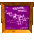

2021 @
Taulant Xhakli
Leader of the bunch. Has a coconut gun.

Twin peanut shooters with a jetpack.

Feather shooter with two pony-tails to fly.
Rocket pineapples with a strong arm to knock fences and walls. Can also pick up heavy bolders.
Grape peashooter with long arms for distance fighting and handstand walking.
The King of the Kremlings. Donkey Kong's mortal enemy.
Army Dillo is the first boss that Donkey Kong faces against in the Jungle Japes level. He has two stages, one is him with the two cannons, with the other not having cannons. DK needs to use the explosive barrel in order to defeat him. In the second fight, the Kremlings will upgrade the boss to try and defeat DK. This time, the Army Dillo will have jetpack launchers (as shown on the left) where his rocket launchers are to hover over the ground and slam down to deliver a devastating blow. Once the armadillo is finished, he will replace the jetpack with the rocket launchers after a roll back to the center (as shown on the right) to fire at DK once again.


Mother to the baby Dogadon, which was squashed by Diddy Kong, she is the second boss encounter in the Angry Aztec level and is challenged by Diddy himself. Though, this will not be the only time the player will face this beast. In the Fungi Forest level, Chunky Kong finds himself stuck in the same lava pit to face off against Dogadon once more.
The killer-joke in the box, Tiny Kong challenges Mad Jack to a platform-based fight in the third boss in the Frantic Factory level.
In the pirate level of Gloomy Galleon, Lanky Kong finds himself trapped in the water with Puftoss.
As the Kongs go through the Creepy Castle level, they are met with the boss himself...King Kut Out? The Kremlings create a cut out of King K. Rool to scare the Kongs, but they do not know that the Kongs see right through the cardboard. To defeat this art project, the Kongs need to wait for the Kut Out to appear for them to launch themselves through the cannons and break off the pieces of cardboard from Kut Out (as shown on the left). But, the Kongs need to tred carefully, as the Kut Out will shoot lasers out of its eyes while Kremlings dressed as ghosts will distract the Kongs (as shown on the right).